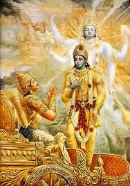

The hidden story of pandavas in there agyatwas
In Pandavas agyatwas the first six months of there agyatwas they were in a cave where only snakes could enter and it was too in that no one can reach there.
YUDHISHTHIRA
.jpg)
Once a Brahmin rishi, Kindama and his wife were enjoying nature in the forest when Yudhishthira's father Pandu accidentally killed them by arrows, thinkingthat they were deer. Before dying, Kindama cursed the king to die when he engages in intercourse with his wife. Due to this curse, Pandu was unable to become father. As an additional penance for the murder, Pandu abdicated the throne of Hastinapura, and his blind brother Dhritarashtra took over the reins of the kingdom.
After knowing the curse of Pandu, Kunti told him that he could be the father of child and told her boon of sage Durvasa. Then Pandu requested Kunti to apply her boon and suggested to call Dharma to get a truthful, knowledgeable and justice knowing son who can rule Hastinapur. On the full moon of May first and eldest Pandavas Yudhishthira was born.
Yudhishthira's four younger brothers were Bhima, Arjuna, and the twins Nakula and Sahadeva . If Karna, the son of Kunti born before her marriage by invoking Surya is counted, Yudhishthira would be the second-eldest of Kunti's children.
Yudhishthira was trained in religion, science, administration and military arts by the Kuru teachers ,kulguru Kripacharya and acharya Drona. Specifically, he became a master in using the spear and war chariot. It is said that his spear was so strong that it could penetrate a stone wall as though it were a piece of paper. His chariot always flew at a 4 finger distance above the ground due to his piety.
wife and children
Yudhishthira had two wives, Draupadi and Devika. Draupadi was the common wife of all the 5 Pandavas, and she bore children for each of the 5. Draupadi bore Yudhishthira a son, Prativindhya and a daughter, Suthanu. Yudhishthira married Devika in a self choice marriage ceremony, arranged by her father Govasena, who was the king of Sivi Kingdom. They had a son, Yaudheya. Yaudheya was also the name of the son of Prativindhya. Suthanu was married to the son of Lord Krishna and Satyabhama, Bhanu.
Indraprastha's king
After the coronation at Indraprastha and hastinapur , Yudhishthira set out to perform the Rajasuya yagna.Arjuna, Bhima, Nakula, and Sahadeva led armies across the four corners of the world to obtain tributes from all kingdoms for Yudhishthira's sacrifice. The non-compliant Magadha king, Jarasandha was defeated by Bhima on the order of Krishna. At his sacrifice, Yudhishthira chose Krishna as his honoured guest.In that sabha Krishna had killed shishupal using Sudarshan chakra.
loosing the kingdom in dyutt krida
During their end of wanwas, the 4 other Pandavas happened upon a lake, which was haunted by a Yaksha. The Yaksha told the brothers to answer his moral questions before drinking the water; the four Pandavas laughed and drank the water anyway. As a result, they choked on the water and died. Yudhishthira went in last, answered many questions put forth to him by the Yaksha and revived his brothers. He asked for any other wish as he was impressed and told him he could ask for wealth, strength, power, anything he wished. Yudhishthira said he already got the strength, wealth and power when all his four brothers were revived and said he could not ask for any other wish. Sahadeva said if you do not use this wish, we might be in trouble in the future. Arjuna knowing that his brother Sahadeva knows the future told Yudhishthira to ask another wish. Bhima and Nakula also knew that Sahadeva and Arjuna were very smart and told him to use his wish. Later Yama, his father told him to ask for a wish. Yudhishthira said, "Asking for 1 or 2 boons is not being greedy but asking for 3 or more boons is being greedy and it is one of the gravest sins. My brothers are insisting me to ask for a wish and the person who is ready to give me a boon, my father also wants me to ask for another boon. I do not ask for being the wealthiest man nor being the most powerful man. All I ask is that me, my brothers and Draupadi should not be recognized during the 13th year of wanwas."This story is often cited as an example of Yudhishthira's upright principles. The Yaksha later identified himself as Yudhishthira's father, Dharma and pointed them to the kingdom of Matsya to spend their last year in exile anonymously.
Along with his brothers, Yudhishthira spent his last year of exile in the kingdom of Matsya. He disguised himself as a Brahmin named Kank (among themselves Pandavas called him Jaya) and taught the game of dice to the king.
battle of kurukshetra
When the period of wanwas was completed, Duryodhana refused to return Yudhishthira's kingdom. Yudhishthira made numerous diplomatic efforts to take back his kingdom peacefully but in vain. He was convinced by Krishna to wage war. The flag of Yudhishthira's chariot bore the image of a golden Moon with planets around it. Two large and beautiful kettle-drums, called Nanda and Upananda, were tied to it. Before the war started, Yudhisthira stepped down from his chariot to take blessings firm his grand sire Bheeshma, teachers Drona and Kripa and uncle Shalya, who all were in his opposite side in the war showing his respect towards his elders.
king of hastinapur again
After getting victory in the war, Yudhisthira was crowned as the Emperor of Hastinapura for 36 years. He performed Ashwamedha on Krishna and Vyasa's insistence. In this sacrifice, a horse was released to wander for a year, and Yudhisthira's brother Arjuna led the Pandava army, following the horse. The kings of all the countries where the horse wandered were asked to submit to Yudhisthira's rule or face war. All paid tribute, once again establishing Yudhisthira as the undisputed Emperor of Bharat Varsh.
BHIMA
.jpg)
Along with other Pandava brothers, Bhima was trained in religion, science, administration and military arts by the Kuru preceptors, Kripa and Drona. Specifically, he became a master in using the mace. Bhima's strong point throughout the epic remains his towering strength. He was so wrathful and strong that it was impossible even for Indra to subdue him in a battle.
Bhima was also renowned for his giant appetite – at times, half of the total food consumed by the Pandavas was eaten by him.
Bhima, being as powerful as his father Vayu and was very happy that Vayu deva was his father because he was very affectionate towards him, he would get to have a lot of strength as he was born because of the blessings of Vayu and that Hanuman would be his celestial brothers as both of them are Vayuś children. He prayed to Vayu and idolized his brother Hanuman. He used to play practical jokes on the Kaurava brothers; he used to engage in wrestling bouts where he out-powered them with consummate ease.
His repeated failures and fecklessness against Bhima angered Duryodhana so much that he wanted him dead. He hatched a cunning plot where he poisoned Bhima's food and drowned him in River Ravi. Thankfully, the Naga king Vasuki saved Bhima and also apprised him of Duryodhana's hatred for him. It is also Vasuki who bestowed him the immense strength of ten thousand elephants.
Duryodhana with his counsellor Purochana hatched a plan to burn the Pandavas alive at a lac palace Lakshagraha at Varnavrata that Duryodhana had built there (lacquer is highly inflammable). Thanks to prior notice from Vidura, the Pandavas managed to escape out from the palace with Bhima played a major role in carrying all five of them (Kunti and brothers) and escaping to safety. Bhima also barricaded the palace of Purochana and set fire to it, thereby ensuring Purochana became a victim of his own evil plot.
Kunti and the Pandavas were living in agyatavaasa (living incognito) after they escaped from the murder plot (Kunti suggests they be incognito to avoid further problems from the Kauravas). During their stay at Ekachakra or kaiwara (in West Bengal), they came to know of a demon, Bakasura, who troubled people by eating members of their village and their provisions. The powerful Bhima brought his might to the fore and killed Bakasura, much to the delight of the villagers and when Bhima killed Bakasura, it was confirmed that Duryodhana, Kichaka, and Jarasandha would be killed by Bhima. Bhima, Duryodhana, Jarasandha, Kichaka and Bakasura were born in the same cosmic phase. As a result of that, the first of these strong people to kill another, the other three would eventually die. Besides the renowned sages like Vyasa, only Krishna and Sahadeva knew this.
Wifes and children
At the time Bhima kills the demon Hidimba who was king of demons of forest Kamyaka, he meets his sister Hidimbi; they eventually get married and have a son, Ghatotkacha. Hidimbi promises Kunti that she and Ghatotkacha will stay out of the Pandavas' lives and away from the luxuries of court. When Bhima killed the demon Hidimba, he became the King of Kamyaka for 5 years. In Mahabharata, the demon army from Kamyaka fought the war alongside Pandavas.
Then the Pandavas attended the Swayamvara of Drupada princess, Draupadi. The Pandavas, led by Arjuna, were successful at the Swayamvara. With his brothers, he was married to Draupadi, who gave birth to a son, Sutasoma. At a later stage, Bhima also married Valandhara, the daughter of the king of Kasi, and had a son named Savarga. Among Bhima's three sons, Sarvaga did not participate in the Kurukshetra war, Sutasoma was killed by Ashwatthama and Ghatotkacha was killed by Karna. In the Hindu epic Mahabharata, Sarvaga was the son of Bhima and his wife Valandhara. He ascended to the throne of Kashi. In the Hindu epic Mahabharata, Valandhara was the princess of Kashi and the wife of Bhima. They had a son Sarvaga.
Rajsuyayagya
When Yudhishthira became emperor of Indraprastha he sent his four younger brothers out in different directions to subjugate kingdoms for the Rajasuya sacrifice. Bhima was sent out to the East, since Bhishma thought the easterners were skilled in fighting from the backs of elephants and in fighting with bare arms. He deemed Bhima to be the most ideal person to wage wars in that region. The Mahabharata mentions several kingdoms to the east of Indraprastha which were conquered by Bhima. Key victories include his fights with:
Jarasandha of the Magadha empire: Jarasandha was a major hurdle before Yudhishthira when the latter decided to perform the Rajasuya yagna. As Jarasandha was a poweful warrior, it was extremely necessary for Pandavas to eliminate him. Lord Krishna, Bhima and Arjuna disguised as Brahmins travelled to Magadha and met Jarasandha. After a formal meeting, Jarasandha enquired about their intentions. Krishna, Bhima and Arjuna revealed their actual identification. Lord Krishna then challenged Jarasandha for duel and gave him freedom to choose any one belligerent. Jarasandha selected Bhima for duel. Both Bhima and Jarasandha were accomplished wrestlers. The duel continued for several days and neither of them was willing to give up. Bhima overpowered Iarasandha after a long duel and almost took Jarasandha to death but Bhima was unable to kill Jarasandha. When Bhima looked at Krishna for guidance, Krishna picked a twig and dissected it into two halves and threw the parts in opposite directions. Bhima complied with his instructions and dissected the body of Jarasandha. He threw the dissected parts in opposite directions. Jarasandha was killed as two halves of the body could not conjoin.Jarasandha held 100 kings in prison and made them ready to sacrifice them. He was known to have a rivalry with Krishna and he wanted the 101st king to be given for the sacrifice. Since Bhima killed Jarasandha, the 100 kings became the supporters of Yudhishthira and accepted him as the chakravarti Samrat.
Dasarnas: where the king called Sudharman with his bare arms fought a fierce battle with Bhima, who later appointed the mighty Sudharman as the first-in-command of his forces. Karna: When Bhima came to Anga Kingdom, Karna didn’t accept to make alliance due to which a terrific war took place between Bhima and Karna. Bhima and Karna both were very good archers. Each used some of their prominent weapons on each other. Bhima broke Karna’s bow. Then both of them fought with the mace. At last Bhima defeated Karna but failed to kill because of Karna’s Kavacha Kundal.
Matsya, Maladas and the country called Madahara, Mahidara, and the Somadheyas, Vatsabhumi, and the king of the Bhargas, as also the ruler of the Nishadas and Manimat:
Southern Mallas and the Bhagauanta mountain.
Wanwas
After Yudhishthira succumbed to Shakuni's challenge in the game of dice, the Pandavas were forced into exile for 13 years, one of which was in anonymity. The exile period in the forests, saw the Pandavas come face to face with many rakshasas and Bhima played a crucial role in the epic in rescuing his brothers every time.
Slaying Kirmira
Right at the start of the exile, in the woods of Kamyaka, the Pandavas encountered the demon Kirmira, the brother of Bakasura and a friend of Hidimba. A fierce battle ensued between Bhima and the demon, where the two equally matched fighters hurled rocks and trees at each other. Eventually, Bhima emerged victorious.
Bhima tries to lift Hanuman's tail
Once in Badarikasrama forest, Draupadi scented the Saugandhika flower and was deeply attracted to it. The lotus species was not to be located easily so Bhima went in search of the flower and ended up at Kubera's palace. He was stopped in his tracks by the rakshasas called Krodhavasas, but he defeated them all and reached the lotus pond. He also slew the rakshasa Maniman a wicked demon, who had in the past, incurred a curse from Rishi Agastya.
Meeting Hanuman
During his search for the Saugandhika flower, Bhima saw an old monkey, lying in the path, whose long tail was outstretching the region. Bhima in pride asked the monkey to move the tail blocking his path. But, the monkey replied saying he's too old and had no strength to do that and requested that Bhima do it instead. Outraged at being commanded by someone inferior to him, he grabbed the monkey's tail with his left hand with intention of swirling him via it and sending him in air and to his surprise he wasn't able to move it. So, he used both his hands and all his might but wasn't able to raise it. Defeated and surprised he asked the monkey for forgiveness with joined hands. The monkey revealed its true-self, Hanuman (his brother, as both were Vayu's children). Bhima received Hanuman's blessing in the form of increased strength. He warned Bhima of the path ahead, warned him of the prophesized war, blessed him of victory in all his endeavours and left.
Killing Jatasura
In another minor incident in the epic, Jatasura, a rakshasa disguised as a Brahmin abducted Yudhishthira, Draupadi and the twin brothers, Nakula, and Sahadeva during their stay at Badarikasrama. His objective was to seize the weapons of the Pandavas. Bhima, who was gone hunting during the abduction, was deeply upset when he came to know of Jatasura's evil act on his return. A fierce encounter followed between the two gigantic warriors, where Bhima emerged victorious by decapitating Jatasura and crushing his body.
Bhima as cook Vallabh
Along with his brothers, Bhima spent his last year of exile in the kingdom of Virata. He disguised himself as a cook named Vallabh.
Bhima kills Jimuta.
Once during a great festival, people from neighbouring countries had come to the Kingdom of Virata. There was a wrestling bout where a wrestler from a different state, Jimuta proved to be invincible. Much to the delight of King Virata and his subjects, Bhima challenged Jimuta and knocked him out in no time. This greatly enhanced the reputation of the Pandavas in an unfamiliar territory.
Kichaka Vadha
Kichaka, the army commander of Virata, tried to sexually assault Draupadi, who was under the guise of a maid named Sairindhri. Draupadi reported this incident to Bhima. Bhima covered himself with silk robes. He slew him the moment he tried to touch him. Kichaka was crushed and slaughtered into a meatball by Bhima. Later Kichaka's allies plotted to murder Sairindri, but Bhima vanquished all of them.
Susarma's defeat
The archenemy of Virata was King Susharma of the Trigarta Kingdom, under the aegis of Duryodana, waged a battle against Virata by stealing the cows in his kingdom. Bhima lead the other Pandavas and Virata, and helped to rout the army of Susarma easily. Before he was about to strangle Susarma to death, Yudhishthira told him to spare him.
Arjuna
.jpg)
Birth
Arjuna was one of the five Pandava brothers of royal lineage, whose collective name derives from their father and heir to the Lunar dynasty, Pandu. However, Pandu was under a curse whereby he would die if he had sexual relations with a woman and thus his sons were conceived by his two wives—Madri and Kunti— with others. According to the legend, Arjuna was a demigod, being the product of a miraculous birth resulting from a relationship between Kunti and the god Indra. Whilst the Devi Bhagavata epic records Arjuna as a reincarnation of a rishi called Nara, the Mahabharata makes no mention of this.
Despite being the younger brother of Dhritarashtra, it was Pandu who succeeded their father as king of Bharata. This was because Dhritarashtra was blind, a disability which caused him to forfeit his right to the royal succession. Dhritarashtra fathered 100 sons, known as the Kaurava brothers, and ascended the throne on the death of Pandu.The Pandava brothers were then brought up with their cousins, the Kauravas, and the education of all these boys was supervised by Bheeshma. Among their teachers was the brahmin warrior called Drona, who considered Arjuna to be his favourite. According to Swami Parmeshwaranand, Arjuna was Drona's most accomplished pupil. He notes an incident where Drona deemed that out of all his students, none but Arjuna had the steadfast focus to shoot the eye of a bird on a tree using a bow and arrow, and that Drona was proven right. Karna had been born to Kunti prior to her marriage with Pandu, conceived with Surya but then abandoned to be raised by a low-caste family. He was thus secretly a half-brother of Arjuna and contrasted with him by being dark-skinned and of low status. As the legend progresses, these classmates become enemies, with Karna and the Kauravas allying against Arjuna and his four brothers.
In time, Dhritarashtra determined to avoid a rivalry developing for control of Hastinapur by splitting the kingdom, with half of it being left to his own eldest son, Duryodhana, and half to the eldest son of Pandu, Yudhishthira.
wifes and children
Arjuna is a central character in the Hindu epics and appears in hundreds of situations. Among the most notable is his marriage to Draupadi,a daughter of Draupada, who was the king of Panchala and the goddess Lakshmi. Draupada holds an archery tournament to determine who should marry his daughter, whom all the Pandava brothers love, and this is won by Arjuna. Confusion arises when he runs home to tell his mother of his success, shouting "look what we have found". Commentators vary as to whether Kunti thought he was referring to alms found in the forest or to some great prize unknown to her. She tells him that the find must be shared with his brothers, as they had always shared such things in the past. This misunderstanding, combined with the protocol that the oldest of the brothers, Yudhishthira, should marry first, leads to agreement that all five brothers marry her. This is one of the rare examples of polyandry in Sanskrit literature. The brothers agreed that none should intrude if Draupadi was alone with one of the others, the penalty for doing so being a year to be spent in exile during which the culprit must remain celibate.
Arjuna inadvertently broke the pact with his brothers, intruding as he sought to collect weapons whilst Yudhishthira, was alone with Draupadi. He felt obliged to go into exile despite Yudhishthira's attempts to dissuade him. It was this event that led to him forming a close relationship with his cousin Krishna because he ignored the celibacy condition of the pact[9] and married three people on his travels, the first of whom was a Naga princess named Ulupi, with whom he had a son called Iravan. His second marriage was with a princess of Manipura, Chitrangada, who bore a son named Babhruvahana. The third was with Subhadra, the sister of Krishna. This last event, which took place in Dvaraka, is not the first meeting between Krishna and the Pandavas in the story but it does mark the start of a bond, sealed with the birth of the couple's child, Abhimanyu, whome Krishna adores.
Wanwas
As heir to the lord ship of Kurukshetra, Yudhishthira had attracted the unwelcome attention of his Kaurava cousin, Duryodhana, who sought the throne. The royal consecration involved an elaborate Vedic ceremony called rajasuya which extended over several years and included the playing of a ritualised game of dice. This particular game, described as "Indian literature's most notorious dice game" was rigged by Duryodhana, causing Yudhishthira to gamble and lose everything, including his kingdom and his shared wife Draupadi. He and his brothers only obtained their freedom because Draupadi offered herself to the Kauravas in exchange. She was then humiliated by them so much that revenge for her treatment became a further motivation for the Pandavas in the rivalry with their cousins. The brothers, including Arjuna, were forced into a 12-year exile, to be followed by a year living incognito if Yudhishthira was to regain his kingdom.
While in this wanwas, Arjuna performed twelve labours. He received instruction in the use of weapons from Parashurama, the sixth avatar of Vishnu, and visited the Himalayas to get celestial weapons that he would be able to use against the Kauravas. Thereafter, he honed his battle skills with a visit to Swarga, the heaven of Indra, where he emerged victorious in a battle with the Daityas and also fought for Indra, his father, with the Gandiva.
death

After Krishna left his mortal body, Arjuna took the citizens of Dwaraka, including 16,100 wives of Krishna, to Indraprastha. On the way, they were attacked by a group of bandits. Arjuna desisted fighting seeing the law of time. Upon the onset of the Kali yuga and acting on the advice of Vyasa, Arjuna and other Pandavas retired, leaving the throne to their only descendant and successor Parikshit (Arjuna's grandson & Abhimanyu's son). Giving up all their belongings and ties, the Pandavas accompanied by a dog, made their final journey of pilgrimage to the Himalayas. The listener of the Mahabharata is Janamejaya, Parikshit's son and Arjunaś great-grandson.
SAHDEV AND NAKUL
.jpg)
birth
Due to Pandu's inability to bear children (because of the curse of Rishi Kindama), Madri had to use the boon given to Kunti Devi by Sage Durvasa to give birth, who invoked the Ashwini Kumaras to beget Nakula and Sahadeva. Later, Pandu died due to Kindama's curse when he attempted an intercourse with his wife, Madri. Then Madri committed sati on Pandu's funeral pyre after handing over her sons to Kunti. Sahadeva and his brothers went to Hastinapura where they were instructed by Drona and Kripa in weapons. He mastered his skills in fencing and axe fighting. He also acquired the Nitishastra from Brihaspati, Guru of the Devas. Sahadeva's core skill was the wielding of the sword. He is said to be mild-mannered, bashful, patient, and virtuous in every aspect except he was arrogant about his wisdom and his spiritual knowledge .
Wifes and children
Sahadeva had two wives Draupadi, the common wife of the Pandavas, and Vijaya, whom he married later.Vijaya was Sahadeva's maternal cousin whom he married in her swayamvara. Sahadeva had two sons, Shrutasena with Draupadi and Suhotra with Vijaya. Suhotra was the only alive heir of Sahadeva after the War. He was appointed as the crown prince of Madra when Sahadeva became the King of Madra, after the War of Kurukshetra.
Wanwas
Yudhishthir's loss in the game of dice meant that all Pandavas had to live in exile for 13 years. Once in exile, Jatasura, disguised as a Brahmin, kidnapped Nakula along with Draupadi, Sahadeva and Yudhishthira; Bhima rescued them eventually. In the 13th year, Sahadeva disguised himself as a Vaishya and assumed the name of Tantripal (within themselves Pandavas called him Jayadbala) at the Kingdom of Virata. He worked as a cowherd who supervised the maintenance and upkeep of all cows in Virata's kingdom.